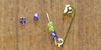

| Gather some safety pins and different kinds of beads. | |
| Carefully open a safety pin and thread some beads on to the pin. Then close the pin to keep the beads in place. |  |
| Use your imagination to come up with all kinds of patterns and use lots of colors. |  |
| You can wear your pins on your shoes, backpack or jacket. You can even make some and trade with your friends! |